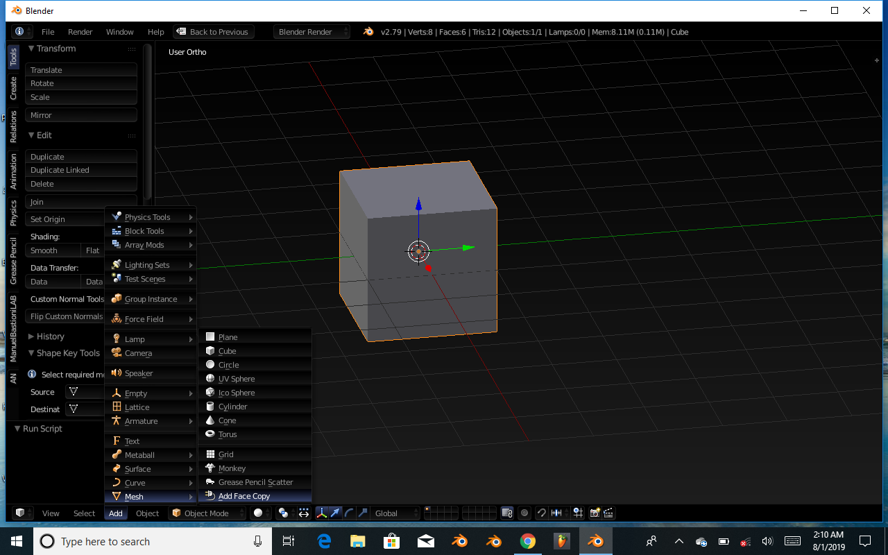
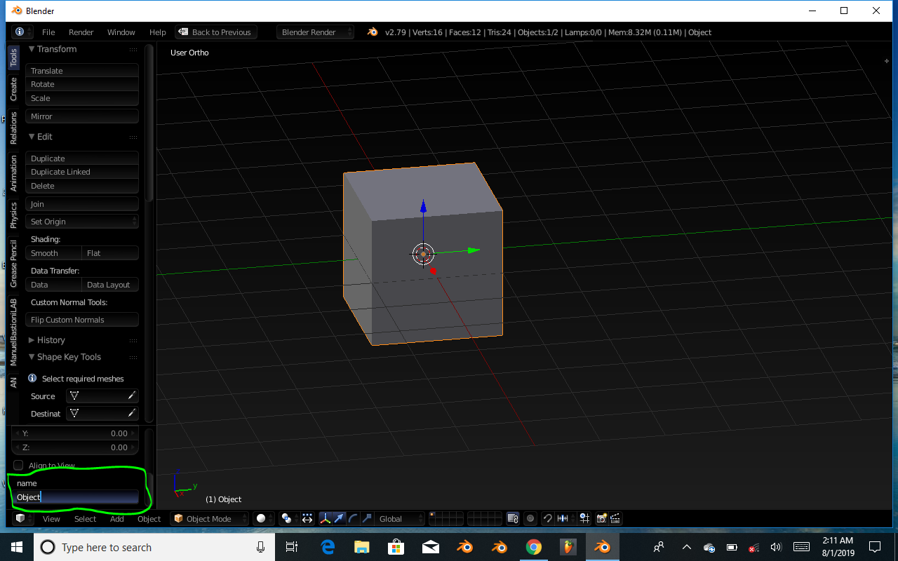

For Blender 2.79
Select desired faces from object in Edit Mode.
Select Add > Mesh > Add Face Copy
Type a name for the new object in the text field or keep the default name, “Object”.
That's it! Make as many copies as you need.
